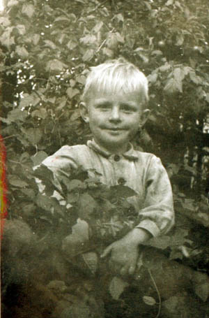
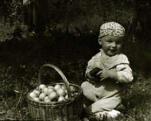
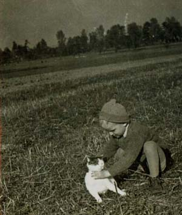
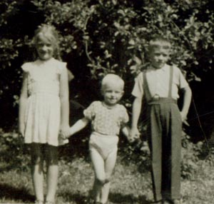
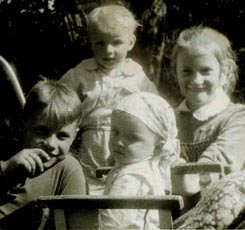

Jan
Waclaw
Mały Kowalik.
Bracia Kowalikowie z kuzynką.
Jan Kowalik urodził się we wrześniu 1952 roku w Solcu Starym. W 1972 roku ukończył Technikum Mechaniczne w Kielcach (w klasie - spawalnictwo), a następnie Wydział Mechaniczno-Technologiczny Politechniki Śląskiej w Gliwicach, specjalność maszyny ciężkie. Od 1977 roku pracownik Huty Stalowa Wola.
W 1982 wyjechał na wycieczkę do Włoch i tam został. Po latach w obozie dla uchodźców, wyemigrował do Kanady. 
Trzej bracia z kuzynką.
Stanisław Kowalik urodził się w 1959 roku w Gackach. W 1987 roku wyemigrował do Kanady. Tam ożenił się z Ukrainką.
Wacław Kowalik urodził się 05.03.1955 roku w Gackach. Z zawodu był rolnikiem, całe życie mieszkał wraz z rodzicami w Gackach. Zmarł 03.08.2015 roku, pochowany na cmentarzu w Szydłowie.
Waclaw